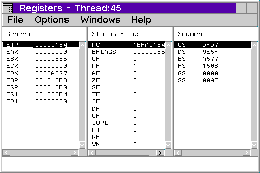

The Registers window lists all the processor registers for a particular thread. The contents of all of the registers except floating-point registers are displayed in hexadecimal. To update a register, double-click on the register and a multiple-line entry field displays. Type over the contents and press Enter.
In the Registers window, floating-point registers display as floating-point decimal numbers. They can be updated with a floating-point decimal number or with a hexadecimal string that represents a floating-point number.
To display the processor registers and flags, select Registers from the Monitors menu or select the Registers button from the tool bar.